Every guarded query passes through four sequential checks before reaching the model, and one more on the way back out. The diagram follows a single request through rate limiting, injection detection, PII redaction, generation, and output-leak scanning.

| Node | Location | What it does |
|---|---|---|
| RATELIMIT / RLCHECK | rate_limiter.py:TokenBucketLimiter.allow() | A token-bucket check per user_id. If tokens are exhausted, the request is blocked before the LLM is ever called — the cheapest possible rejection. |
| INJECTCHECK | prompt_injection_detector.py:detect_prompt_injection() | Tests the prompt against 8 case-insensitive regex patterns (instruction-override phrasings, role-hijack attempts, system-prompt exfiltration). Any match blocks the request entirely. |
| REDACT / FOUNDPII | pii_detector.py:redact_pii() | Tests 4 PII patterns (email, SSN, phone, credit card). Matches are replaced with [REDACTED_<TYPE>] IN THE PROMPT SENT TO THE MODEL — the request isn't blocked, just sanitized. |
| LEAKCHECK | output_guardrails.py:check_output() | Scans the MODEL'S RESPONSE for PII too — but only flags a leak if the category was ONE OF THE ONES ACTUALLY REDACTED from this specific input, avoiding false-flagging an unrelated category the model might hallucinate. |
Passes every gate cleanly — rate limit ok, no injection pattern, no PII to redact, output scan finds nothing to flag.
RATELIMIT(ok) → INJECTCHECK(clean) → REDACT(no PII) → LLMCALL → LEAKCHECK(no leak) → ALLOWEDMatches an injection pattern immediately — the LLM is never called at all for this request.
RATELIMIT(ok) → INJECTCHECK(matched) → BLOCKED2The email gets redacted before the model ever sees it; the model can still help with the actual question using the placeholder.
REDACT(email found) → REPLACED('[REDACTED_EMAIL]...') → LLMCALL → response doesn't contain the real email → ALLOWEDIf the response somehow contains the same email that was redacted from the input, the output guardrail catches it and withholds the response — the leak check comparing input redactions to output findings.
LLMCALL → LEAKCHECK('email' in both output_pii AND redacted_input) → FLAGGED